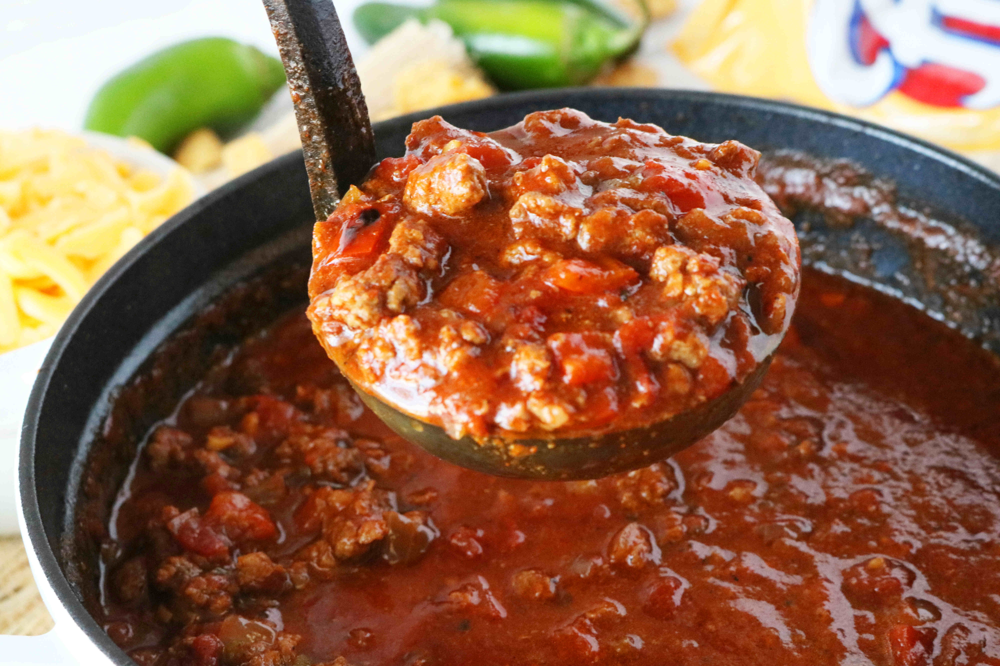

Chili

Description
A hearty stew that can be made with or without meat. Good for a cold winter's day.
It is recommended that you cook it in a crockpot.
Adding cheese and crackers to a bowl or eating it with cinnamon rolls is great.
Ingredients
- 1 pound ground beef or other ground meat
- 30 ounces of tomato juice
- 3 15 ounce cans of chili beans
- 1 15 ounce can of black beans
- 1 15 ounce can of kidney beans
- 1 beef boullion cube
- 1 8 ounce can of tomato paste
- 1 12 ounce jar of jalapenos (optional)
Steps
- Brown the ground beef in a skillet and drain
- Move the ground beef to the crockpot
- Add in your beans, tomato juice, and tomato sauce
- Throw in the boullion cube
- Add in the jalapenos if you are using them
- Cook overnight on low for best results or for at least 8 hours
- Add crackers and cheese to your bowl when you are ready to eat